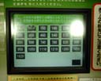
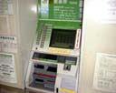
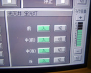
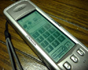

Human-Machine Interfaceについて
ソフトなスイッチと階層化されたスイッチ


さまざまな制御機器のコンソールにおいて最近メカニカルなスイッチではなく、
タッチパネルとコンピュータの画面を組み合わせた、いわばソフトなスイッチ
が増えてきている。身近なものとしては駅の自動券売機やアミューズメント会場
などにある電子案内板、一部の携帯電話などにもみられる。
他にも工作機械のコンソールパネルや説明会場のPA機器などにも利用
されている。このインターフェースの長所は限られた面積にメニューとしてスイッチ
を階層化することで多くの機能を実現できることである。またそれによって
機能と１対１に対応したメカニカルなスイッチを並べる場合に比べ、コストも
抑えることができ、安価にオーダーメイドなシステムを構築することも可能で
ある。さらに運賃の変更や、新しい機能の追加などもソフト側の変更だけで
容易に行うことができるので、今後もコンピュータネットワークとの融合など
によってにさらに発展していくことが期待される。しかし、現段階では
メカニカルなスイッチに比べ、タッチパネルによるスイッチは応答が遅く、また
作り方が悪いと画面に表示されているスイッチの絵と実際に指の位置を感知する
エリアがずれてしまったり、感度が悪いとなかなか押せないといったことがある。
またメカニカルなスイッチのように押すと「へこむ」という重要なフィードバック
が無いため、きちんと押されたのかわかりにくい。
さらに階層化されたメニュー方式は一見機能が分類されて分かりやすい
ようで、その分類の仕方はいくら統計的に一番よいと思われる分類をしても実際には
ユーザの観点と一致しないこともあり、非常にわかりにくくなってしまうことがある。
またすぐにその機能を呼び出したいときにも親から子へ順に
辿らなければならず、機能が一対一に対応したスイッチによるものに比べ、ずっと
時間がかかってしまう。この階層的なメニュー方式の
インターフェースはタッチパネルとディスプレイを組み合わせたものに限らず、
メカニカルなスイッチを用いたインターフェースにも適用することが可能である。

タッチパネルとコンピュータによるインターフェース
長所
短所
- 反応が遅い。
- 操作を誤りやすい。(触覚に訴えない)

階層化されたスイッチ
長所
短所
- 機能の呼び出しが遅い。
- 操作を誤りやすい(わかりにくい)ことがある。
ｂｙ すすたわり